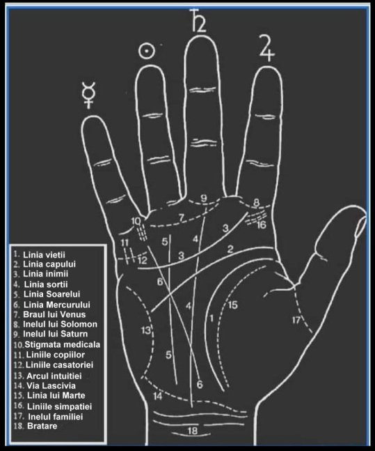

Harta natală completă · Tranzite · Case Astrologice · Chiron & Asteroizi · Lilith · Stele Fixe · Aspecte Natale · Planeta Dominantă · Profile Psihologice Jungiene · Zodiac Chinezesc Ba Zi · Bioritm · Calendar Zile Favorabile · Mercur Retrograd · Eclipsa · Oracol Zilnic

Calculul temei natale...